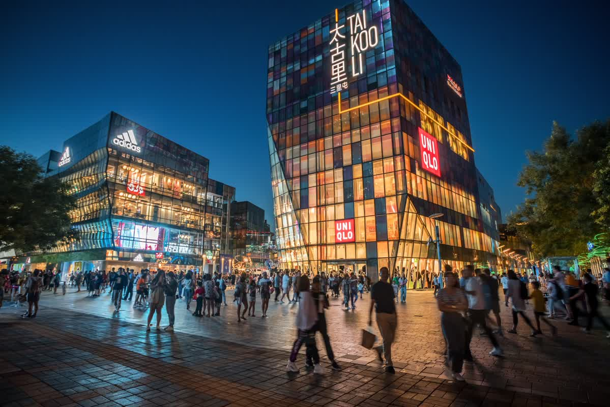
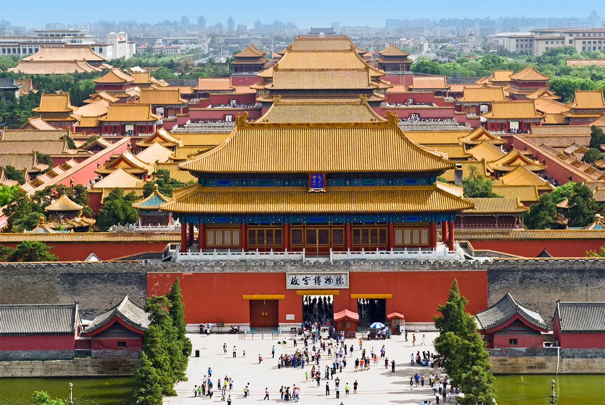
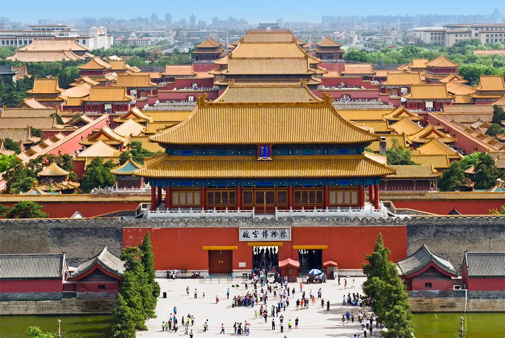
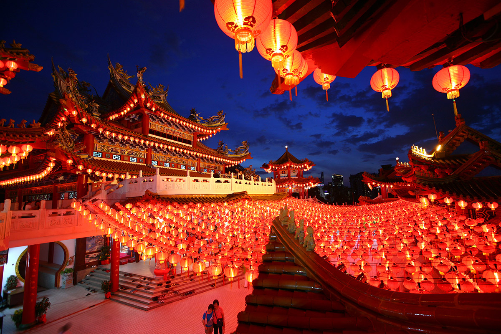
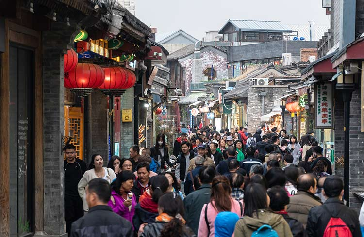

Explore China: Where I Am From
Welcome to Beijing, China—Where I Was Born
Discover the rich history, vibrant culture, and breathtaking landscapes of Beijing, China. I was born in this extraordinary city—a place where you can find everything from high fashion and Michelin-starred cuisine to centuries-old traditions woven into everyday life. For many, Beijing is a dream destination or a vibrant stop on their travel bucket list. But for me, it's home. It's where I grew up, where my roots lie, and where my family’s story begins.
Beijing isn’t just a city to me—it’s a part of who I am, a place that will always hold a special place in my heart.
History and Culture of Beijing
Beijing has been a major cultural and political center for over 3,000 years. It became the capital during the Yuan Dynasty (1271–1368), and remained the capital under the Ming and Qing Dynasties.
Known for landmarks like the Forbidden City, Tiananmen Square, and parts of the Great Wall, Beijing has long been the heart of Chinese politics, tradition, and innovation. Today, it’s a blend of ancient history and modern vibrance—an iconic city that represents both the past and future of China.
 

What Does Beijing Mean to Me?
Beijing will always hold a special place in my heart. It’s the city where I took my very first steps, spoke my very first words, and created some of the most precious memories of my childhood. Every corner of the city holds a story—whether it's the scent of street food on a chilly evening, the sound of laughter echoing through the narrow hutongs, or the peaceful moments spent with family in familiar parks and neighborhoods.
I grew up surrounded by its culture, its rhythm, and its ever-changing skyline. Though I now live in Canada, thousands of miles away, Beijing will forever remain a part of who I am. It shaped my earliest experiences and continues to influence how I see the world. No matter where life takes me, a piece of my heart will always belong to that vibrant, beautiful city.
Ending Thoughts...
China has so much to offer—far more than what many people realize at first glance. Often, outsiders only see the surface: the towering skylines, the crowded tourist attractions, or the headlines they read. But beneath that surface lies a rich, intricate tapestry of culture, history, tradition, and everyday life that reveals itself only to those who take the time to truly explore.
My biggest suggestion for anyone visiting China is this: go beyond the tourist guidebooks. Step away from the crowded landmarks and let yourself wander. Walk through local neighborhoods, try small family-run restaurants, strike up conversations, and observe the rhythm of daily life. There is so much depth waiting to be discovered—hidden stories, authentic experiences, and a genuine warmth that often gets overlooked.
China isn’t just a destination; it’s a journey that invites you to look deeper, to challenge your assumptions, and to walk away with a newfound appreciation for its beauty, complexity, and heart. So come with an open mind and a curious spirit—and let the country surprise you.
See it for Yourself!
